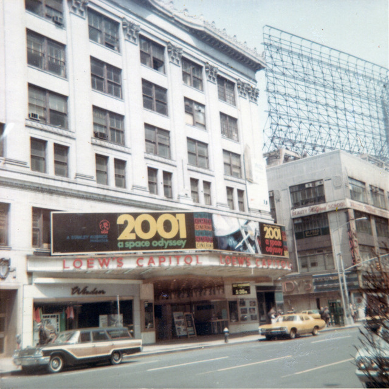
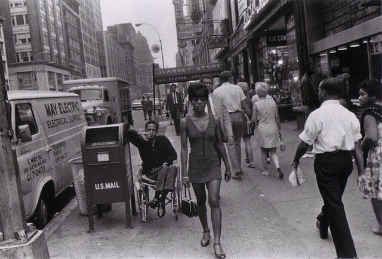
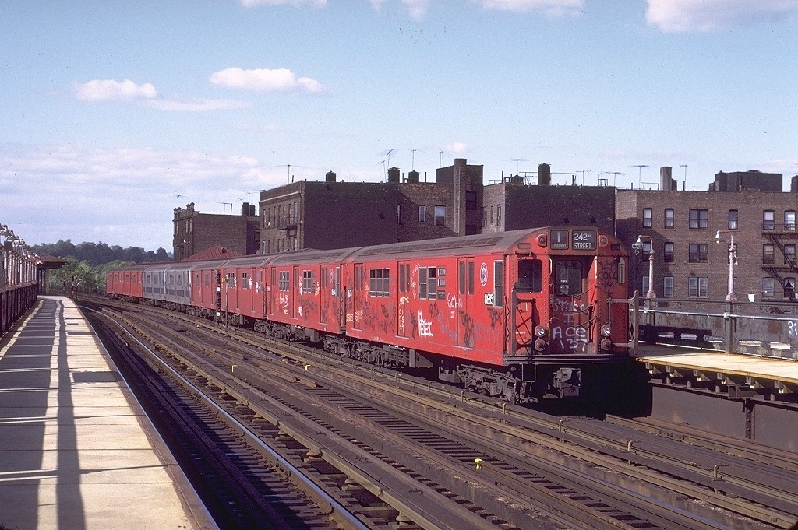
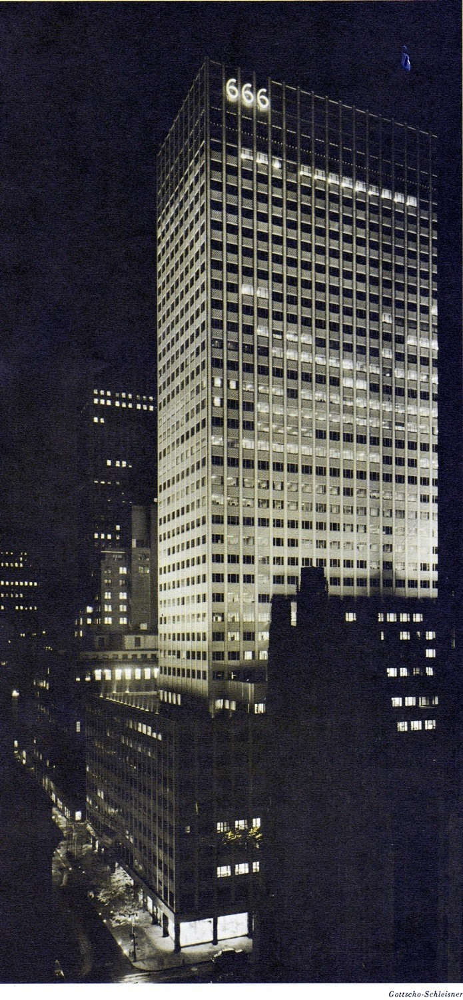
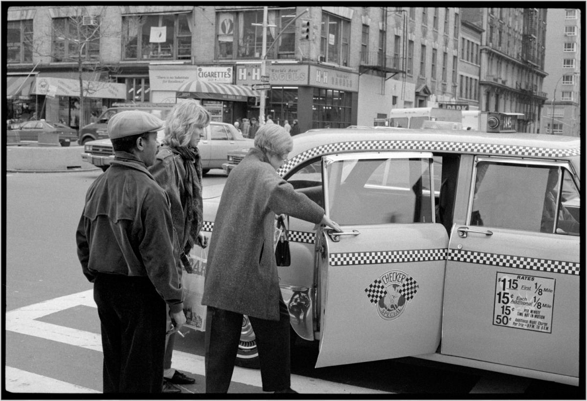
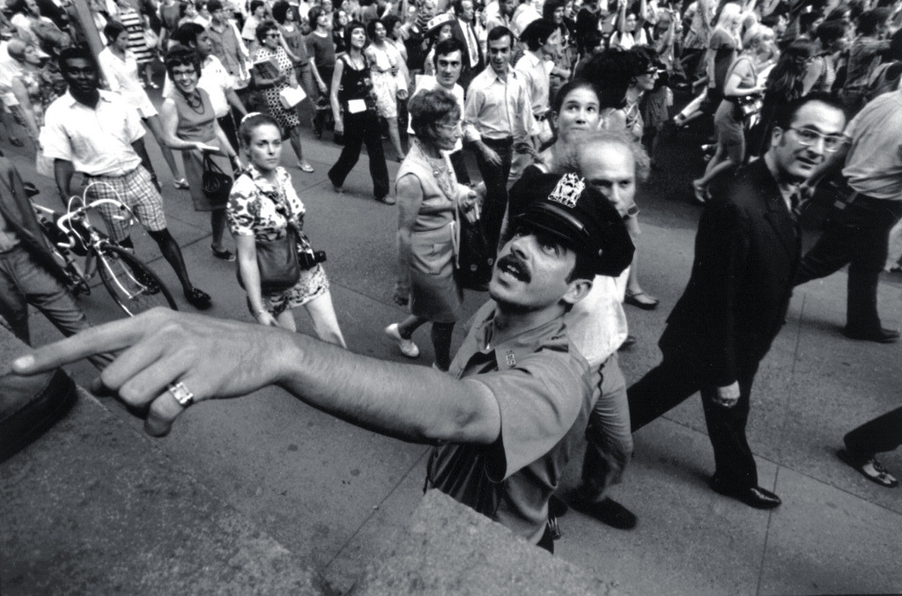
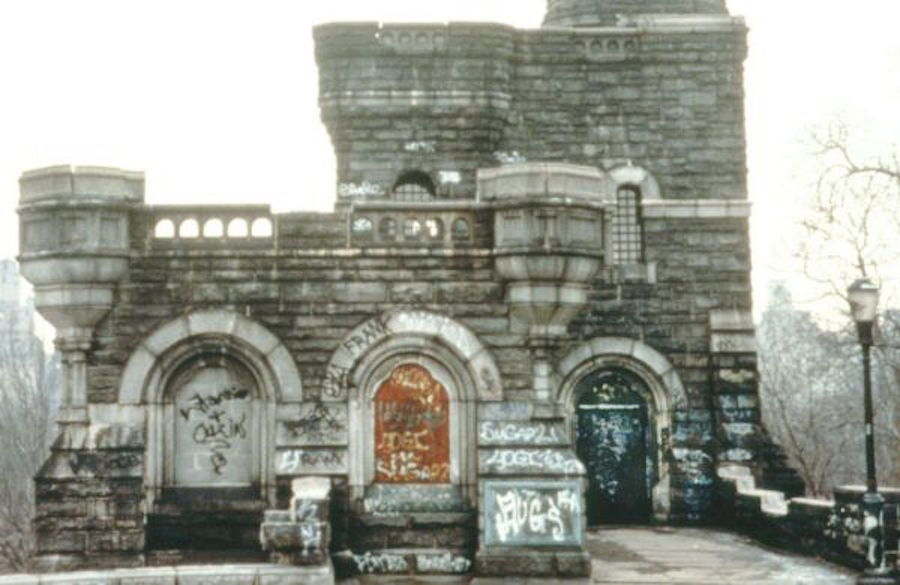
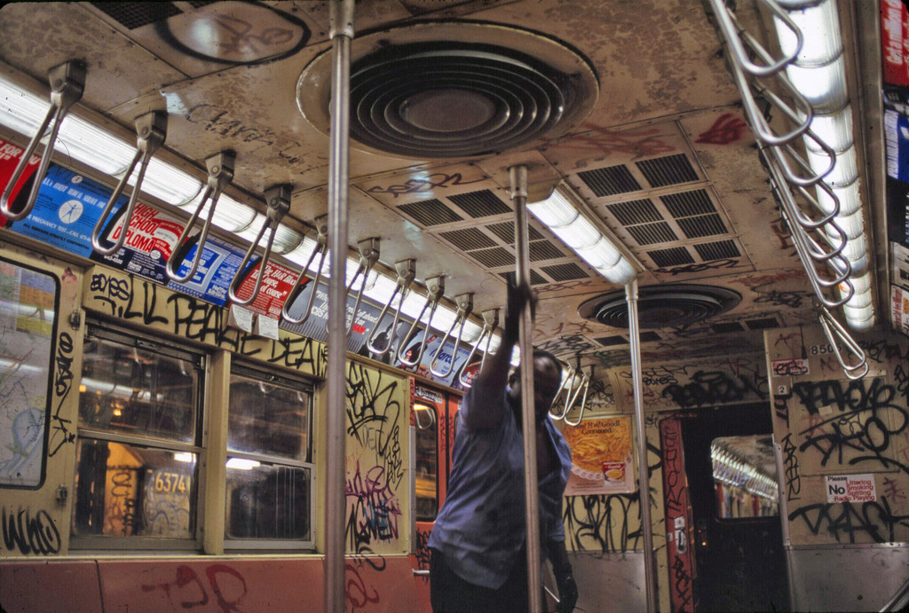

Richard Blair West Village, New York City 1969
Richard Blair West Village, New York City 1969
She finds the graffiti boring.
What the 80s were like in NYC
Studio 54, 1978
Passengers sitting on a subway.
New York, ca.1972
William Gedney Photographs and Writings
Duke University David M. Rubenstein Rare Book & Manuscript Library

Loew’s Capitol Theater, spring 1968

Eileen’s Reno Bar, on Second Avenue, from my recently scanned prints from about 1989. I was attracted by the aesthetics in deciding to photograph the place, especially the perfect neon sign (extra points for being lit during the day). This made me pretty much as clueless as the walk-ins described by Gary Indiana in his somewhat NSFW essay on the East Village scene of the day, “One Brief, Scuzzy Moment” in which the Reno Bar played a role: “In a strictly hedonistic way, Eileen’s Reno Bar was integral to the East Village community.”

Hey baby

©Joel Meyerowitz, New York, 1971
Protesting the subway fare increase of 1975 (from 35 cents to 50 cents).
Scenes from the documentary NYC, 1981. A Most Violent Year.

Warner Cinerama Theater, 1585 Broadway at 47th Street, December 1968 [x]

Photo by Matt Weber, 1985

subway, New York City

East 149th and Brook Ave in the Bronx, 1979

That’s a high cop-per-perp ratio.

125th and 5th, 1979

New York. Breakfast at Tiffany’s,1906.
The Tiffany Building on 37th Street and 5th Avenue Still under construction.

Black Panther community center, Harlem, 1968

1 train, 1972

Night view of Tishman Building (Carson & Lundin, 1957) at 666 Fifth Avenue in Spring of 1958. View looking southwest from St. Regis Hotel.
Photo: Samuel H. Gottscho.
Source: Progressive Architecture. September 1958.
West 65th Street in the 1960s

Getting into a checker cab. H&H Bagels in the background. 1987
Jack Garofalo

Climbing Rocks, NY, 1948

Garry Winogrand: Park Avenue, New York (1959)

6th Ave and 20th Street, 1975

Trying to control grafitti…
fail

Delancey Street, 1970

A view of the city from the George Washington Bridge, 1936

Santa slummin’ it.

NYPD, 1969
1970
From East 100th Street, New York City, 1968
Bruce Davidson
Portrait of a kid about to get stabbed.


Broadway and 48th, 1980

Broadway and West 47th Street, ca. 1977
Thanks!
No, I don’t know when that photo was taken – I just sort of stumbled across it, and there was no info about it. It looks fairly contemporary, given what the cars look like.

96th and 3rd, 1983
NYC Subway, 1972 by Jim Wells

86th and Broadway, looking Northwest, 1984.
I don’t remember that little pizza place. It must’ve sucked.

Belvedere Castle, Central Park, 1970s.
Before the “beautification” of Manhattan, this was a great place to hang out.

Underground:1966
Danny Lyon

Up on the roof.

Why’s he standing?

Stranded
Strand Theatre, Broadway, New York
1940

Getting ready for the graffiti era. 1970s.
East 3rd St, between 2nd and 3rd Aves, 1981
{kind=link}